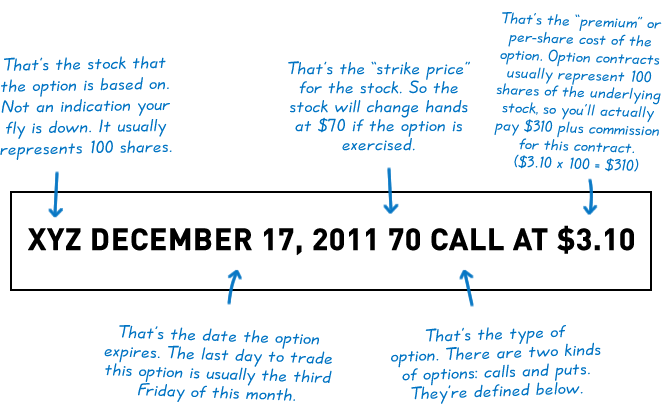
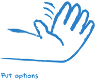

Options Basics
Here are a few things you absolutely need to understand before this Playbook will make as much sense to you as we hope it will. Some of you probably already know these terms and concepts, or at least think you do. But how will you really know you know them unless you read this section? Therein lies the paradox.
Of course, if you’re a seasoned veteran or MVP, by all means skip right ahead to the option strategies. And for you rookies, well, read on. We’ll try to keep it interesting.
Throughout the site we talk about the “stock” that options are based on. That’s a bit of an oversimplification. Actually, options can be traded on several kinds of underlying securities. Some of the most common ones are stocks, indexes, or ETFs (Exchange Traded Funds). So feel free to substitute these terms to match your preferred style of trading.
Options are contracts giving the owner the right to buy or sell an asset at a fixed price (called the “strike price”) for a specific period of time. That period of time could be as short as a day or as long as a couple of years, depending on the option. The seller of the option contract has the obligation to take the opposite side of the trade if and when the owner exercises the right to buy or sell the asset.
Here’s an example of a standard quote on an option.
Call Options
When you buy a call, it gives you the right (but not the obligation) to buy a specific stock at a specific price per share within a specific time frame. A good way to remember this is: you have the right to “call” the stock away from somebody.
If you sell a call, you have the obligation to sell the stock at a specific price per share within a specific time frame — that’s only if the call buyer decides to invoke their right to buy the stock at that price.
Put Options
When you buy a put, it gives you the right (but not the obligation) to sell a specific stock at a specific price per share within a specific time frame. A good way to remember this is: you have the right to “put” stock to somebody.
If you sell a put, you have the obligation to buy the stock at a specific price per share within a specific time frame — that’s only if the put buyer decides to invoke their right to sell the stock at that price.
Using Calls and Puts in More Complex Strategies
Much of the time, individual calls and puts are not used as a standalone strategy. They can be combined with stock positions and/or other calls and puts based on the same stock.
When this is the case, the strategies are called “complex”. This term does not imply they are hard to understand. It just means these strategies are built from multiple options, and may at times also include a stock position.
You’ll find out about the various uses of calls and puts when we examine specific option strategies.
Today's Trader Network
|
All-Star Trade Report |
Options Guy Blog |
Videos, webinars and more |